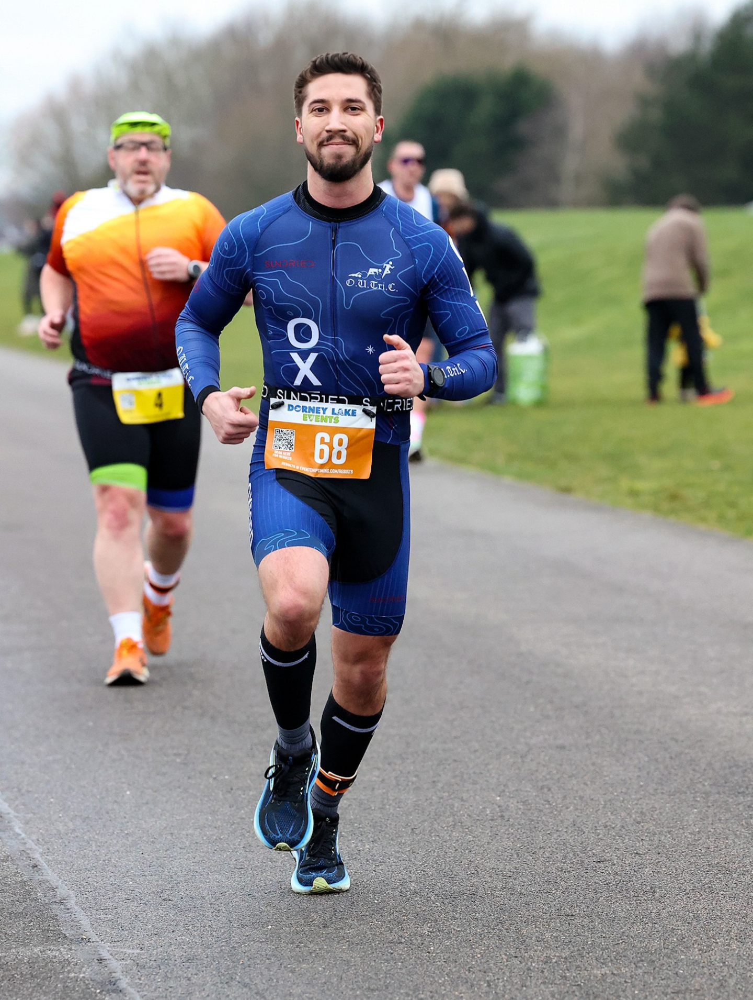

Background
I am a PhD candidate in the Department of Earth Sciences at the University of Oxford, specializing in deep Earth seismic imaging. My research focuses on improving and developing tomography methods, primarily linear inversions and inferences.
Most of my research focuses on linear inference methods rooted in the foundational work of Backus and Gilbert. The core philosophy of these approaches is to constrain properties of the true Earth model—rather than attempting to recover the model itself, which is often ill-posed due to non-uniqueness. The methods I use and develop emphasize a rigorous mathematical formulation of the inverse problem prior to its numerical solution. This includes a clear understanding of the functional spaces involved, the linear operators connecting them, and the nature of the constraints and assumptions underpinning the formulation.
A central aspect of my work is examining the role of discretization in shaping the outcome of inversions, ensuring that it does not introduce spurious features or distort the interpretation. I place strong emphasis on making assumptions explicit, ensuring well-posedness, and carefully analyzing the mathematical structure of the problem. This approach is essential not only for producing interpretable and reliable inferences, but also for avoiding the risk of mistaking artefacts for geophysically meaningful structures.
Research Interests
- Inverse and inference theory
- Sensitivity kernels and adjoint methods
- Computational seismology and numerical methods
- Deep Earth processes and core-mantle interactions
Education
PhD in Seismology (ongoing)
University of Oxford (Current)
Supervisors:
- Dr. Paula Koelemeijer Website
- Dr. Christophe Zaroli University Page
- Dr. Andrew Walker Website
MSci Geophysics
University College London
- Focus on theoretical studies
- Course load more inclined towards mathematics and physics (especially small scale physics such as statistical physics, quantum mechanics, and particle physics)
MSci Thesis: Explored the use of wavelet-based sparsity for regularizing geophysical inverse problems. Demonstrated that promoting sparsity in a wavelet basis (using L1 norm and proximal algorithms) can recover multi-scale Earth structures from seismic data, preserving small-scale features better than traditional smoothing regularizations. Applied the method to S-wave velocity inversion in the upper mantle, with synthetic and real data tests compared to standard techniques.
Beyond Research
Hiking is probably my oldest hobby. Growing up in Oradea, Romania, the mountains were never far away, so half-day hikes became a regular part of my life. I spent most of my time in the Piatra Craiului and Bihor Mountains—partly because they were close, but mostly because their karst landscapes are incredible. Thousands of caves, dozens of ravines, and narrow canyons give these modestly tall mountains a surprisingly dramatic character.
It’s no wonder that hiking eventually led me to caving. I don’t have as much time for it these days, but whenever I go back home, I still try to explore a cave or two.

About six years ago my sister received a telescope as a gift, and I quickly became interested in photographing the Moon through it. After many nights of struggling to line up my phone with the eyepiece, I finally decided to buy my first DSLR. That was my gateway into astrophotography.
All the banner images on this website were captured with my camera and a simple astrophotography setup.

Soon after getting into astrophotography, I started taking my DSLR on hikes, and that naturally led me into landscape photography. I still carry my camera with me everywhere. This September, I hiked 200 km on the GR20—of course I swapped out some dry food to make room for my camera.

More recently, I’ve gotten into running and cycling. I joined the triathlon club at Oxford, though in practice I’m basically a duathlete—my swimming is good enough for a relaxed holiday dip, but it won’t win me any races. I usually aim for 2–3 races a year, and I try to fit in at least one marathon or half-marathon annually. On the cycling side, I’d love to get more into long-distance bikepacking, but so far time (and the weather) hasn’t been on my side.
